Simple Flying Enemy Combat (v1.0.0) - User Guide
Blueprint and C++ friendly complete flying enemy and first-person combat system for Unreal Engine 5.6 - 5.8, with options exposed cleanly in Details panels and full tuning across C++, Blueprints, and Details panels. Browse the Overview for a quick start, or select dedicated tabs for the Combat System, UI & Popups, and every flying enemy archetype.
Playable Demo Arena (SimpleFlyingEnemyCombatDemo)
/SimpleFlyingEnemyCombat/Examples/Maps/SimpleFlyingEnemyCombatDemo and press Play (PIE). All functionality will work out of the box in the demo for testing.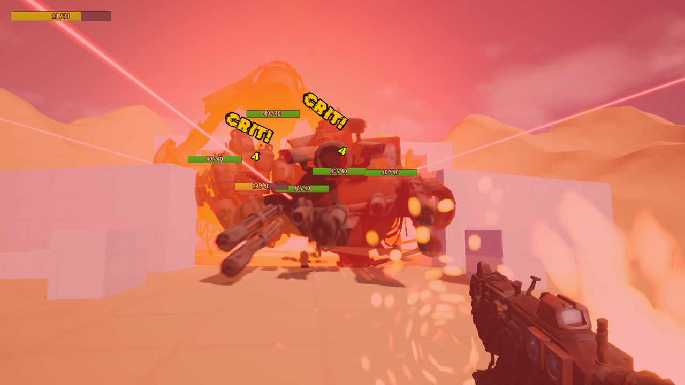
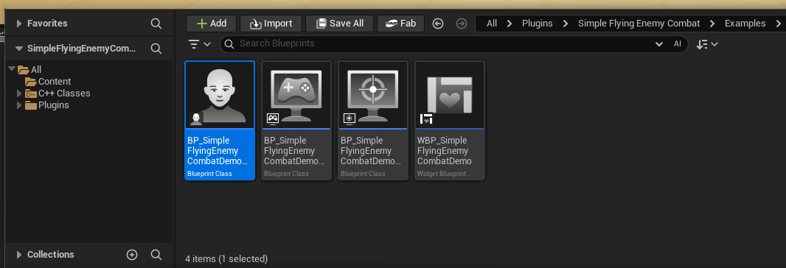
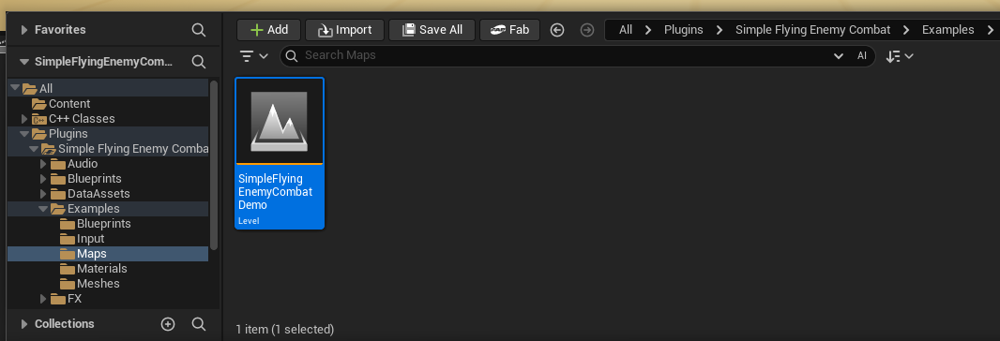
Playable map, character, HUD, and 6 flying enemy Blueprints under /SimpleFlyingEnemyCombat/.
| Input | Action |
|---|---|
W / A / S / D | Move your character across the desert combat arena |
Mouse Move | Look and aim at hovering, swooping, and circling drones |
Spacebar | Jump over cover blocks and incoming low-altitude projectiles |
Left Mouse Button (LMB) | Fire the active weapon preset (rifle, shotgun, launcher, or saw shooter) |
Keys 1 / 2 / 3 / 4 | Switch live between [1] Standard Rifle, [2] Multi-Split Shotgun, [3] Explosive Launcher, and [4] Ricochet & Pierce Saw |
Showcase Recordings: Hero Combat: MP4 / GIF | Multi-Split Shotgun: GIF | Explosive Launcher: MP4


Setup
Step 1: Enable Plugin & Configure Player Combat Components
Copy SimpleFlyingEnemyCombat into Plugins/, enable it alongside EnhancedInput and Niagara, attach GunComponent, HealthComponent, ShootInputComponent, GunCosmeticComponent, BulletSpawnerComponent, and DamagePopupComponent on your character, and assign DA_Gun_* presets in Details.
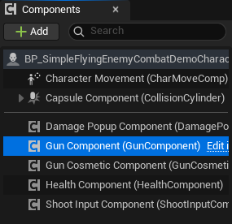
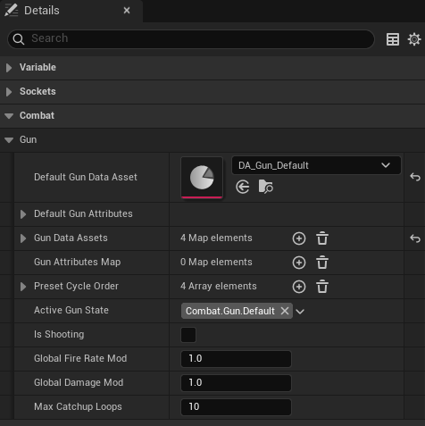
Step 2: Configure Player Health, Dodge, Armor & Damage HUD
Select HealthComponent on your character to assign DA_PlayerHealth_Default (or tune health, armor, dodge, and passive regeneration directly) while WBP_DamageHUD drives player HP bars and crimson screen feedback.
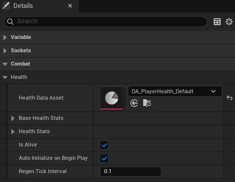
Step 3: Drop Any of the 6 Flying Enemy Archetypes Into Your Level
Drag any BP_* enemy Blueprint (BP_Persistor, BP_BombBot, BP_MachineGunner, BP_NailGunner, BP_Stalker, or BP_LaserBallBot) into your level and tune Enemy | Archetype, Weapon, or Laser in Details.
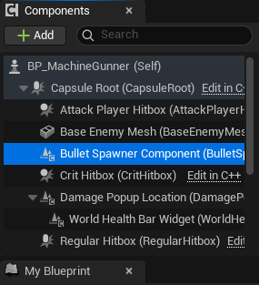
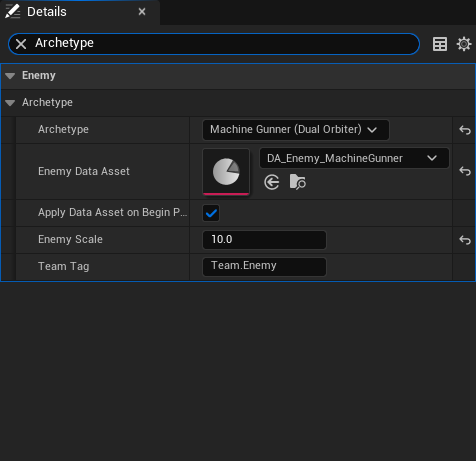
End of Setup
Your level now runs full two-way first-person combat out of the box: fire split, explosive, or ricochet projectiles, trigger hit flashes and floating CRIT popups on enemies, and absorb live bullet, blast, melee, and beam damage on the player.
Systems & Enemies Directory
Combat System
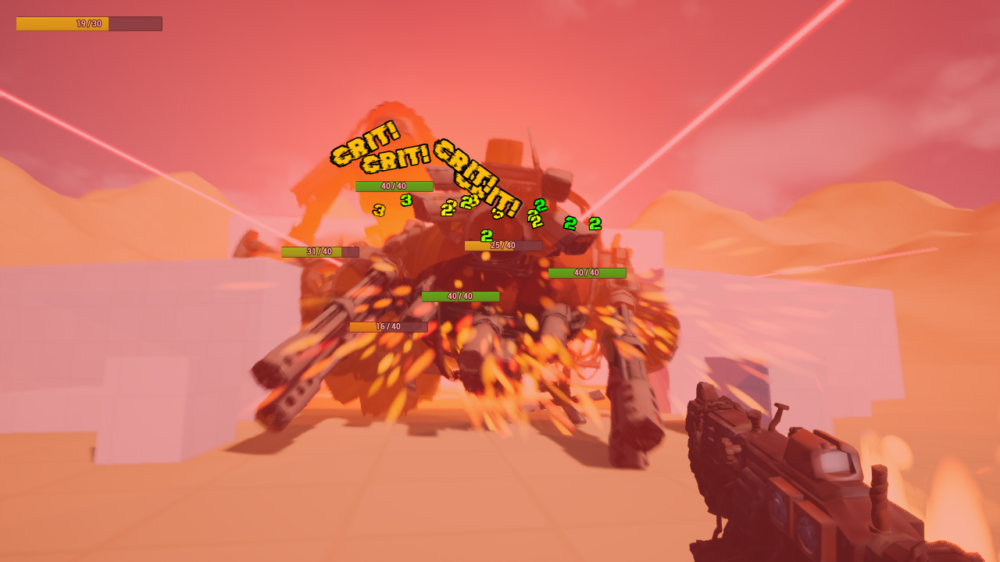
Multi-preset player gun controller, split fans, TrashBomb blasts, and ricochet/pierce projectiles.
UI & Popups
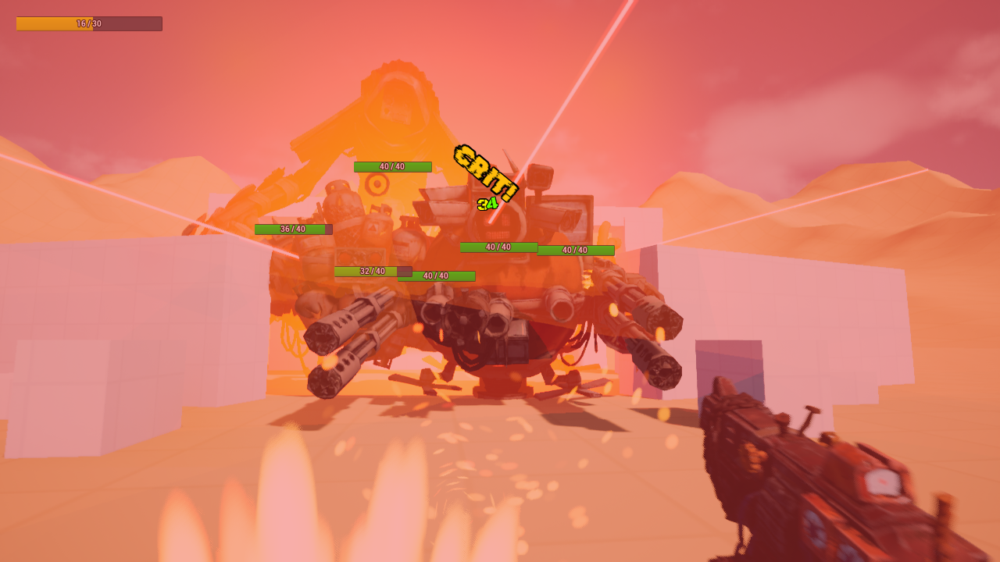
Screen damage HUD vignette, floating 3D world health bars, stylized CRIT popups, and emissive hit flashes.
Persistor
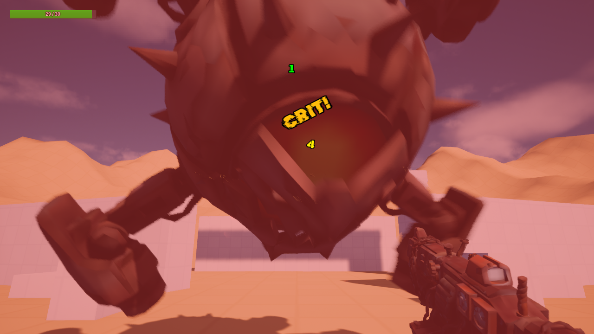
Direct aerial chaser firing projectile bursts with 4 thruster exhaust emitters and melee contact pressure.
Bomb Bot
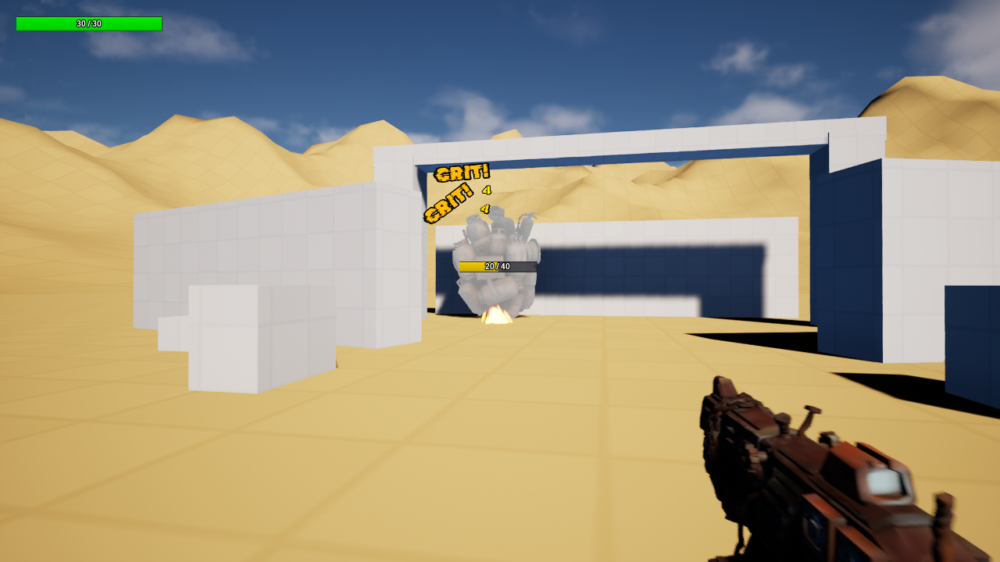
Fast pursuit unit that winds up a spin warning inside AttackPlayerHitbox and triggers self-destruct AoE damage.
Machine Gunner
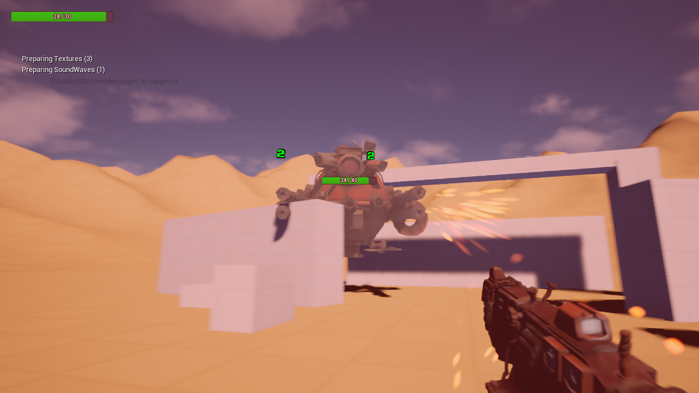
Alternating dual-barrel orbiter blending WeightedOffset tracking, repulsion, and continuous fire.
Nail Gunner
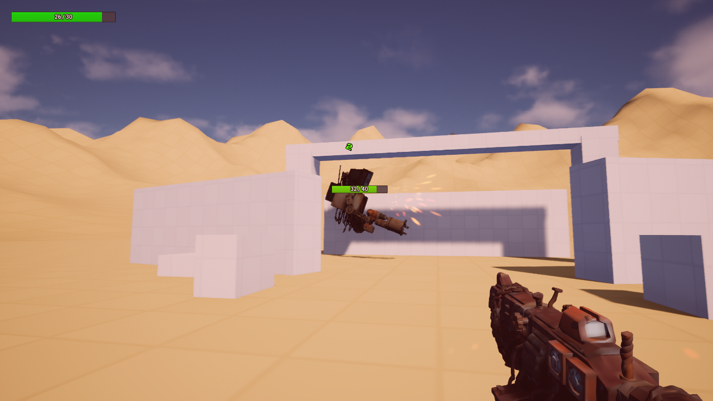
Three-state burst shooter using lead-predicted targeting around Idle, Orbit, and Attacking cycles.
Stalker
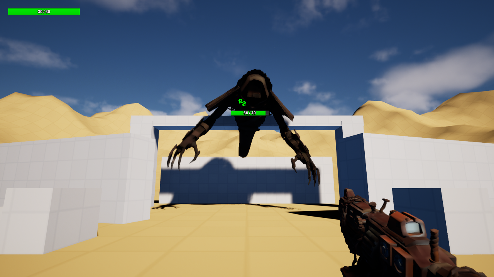
Constricting-orbit assassin that spirals inward and executes high-speed claw dive dashes.
Laser Ball Bot
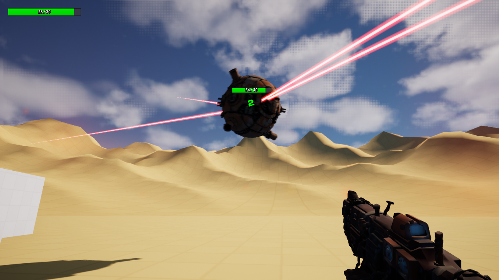
Rotating sphere emitter sweeping 4 live Niagara laser traces with periodic beam damage and impact flares.
Blueprint Quick Entry Points
Character Input & Keys Graph
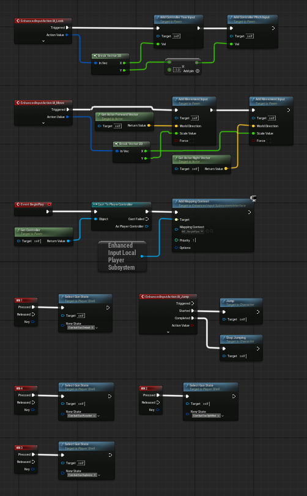
BP_SimpleFlyingEnemyCombatDemoCharacter binds movement, look, jump, and keys 1 through 4 cleanly in Blueprint.
Demo HUD Widget Binding
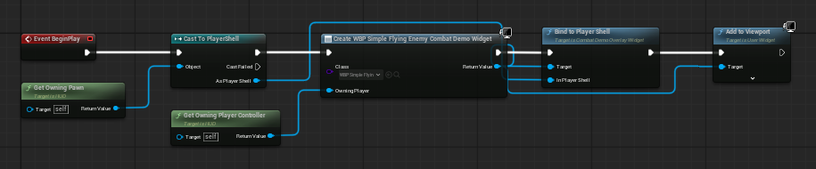
BP_SimpleFlyingEnemyCombatDemoHUD creates the overlay widget, binds to APlayerShell, and adds it to viewport.
Fire Single Shot Entry Node
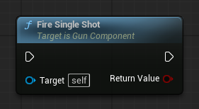
Trigger manual shots from any Blueprint or C++ input handler with FireSingleShot on UGunComponent.
Appendix - API Reference
This table highlights the primary entry points. Additional properties, helper functions, Blueprint nodes, and native C++ APIs are available in Unreal Editor Details panels, Blueprint context menus, and the plugin C++ headers.
| Name | Type | Inputs / Outputs | Functionality |
|---|---|---|---|
APlayerShell (BP_SimpleFlyingEnemyCombatDemoCharacter) | Character | In: GunComponent, HealthComponentOut: FireSingleShot(), SelectGunState() | Ready-to-play FPS character supporting multi-preset shooting, damage absorption, knockback, and HUD flash |
AFlyingEnemyPawn (BP_Persistor .. BP_LaserBallBot) | Pawn | In: UEnemyCombatDataAssetOut: OnEnemyDied | Self-contained flying enemy pawn with regular/crit hitboxes, world HP bar, thrusters, hit-flash, and AI state logic |
UGunComponent (SelectGunState, CycleGunPreset, FireSingleShot) | Component | In: FGameplayTag StateTagReturn: bool / FGameplayTag | Manages weapon state tags, DataAsset presets, split-pellet spread, fire rate, and catchup loops |
UBulletSpawnerComponent (Shoot, SpawnOneBullet) | SceneComponent | In: FGunAttributes, YawOffsetReturn: int32 / ABullet* | Spawns single or multi-split projectiles for player weapons and single/dual-barrel flying enemies |
ABullet (BP_Bullet*) | Actor | In: FBulletAttributesOut: OnBulletHitTarget, OnBulletExploded | Handles direct projectile hits, radial AoE blast impulse, multi-target piercing, and wall ricochet |
UHealthComponent (ApplyDamage, Heal, GetHealthStats) | Component | In: Damage, Crit, Knockback Out: OnTookDamage, OnDeath | Processes armor mitigation, random dodge chance, passive HP regeneration, knockback, and death events |
UDamageHUDWidget (TriggerPlayerDamageFlash, ComputePopupPlacement) | UserWidget | In: DamageTaken, WorldLocation Out: ScreenPos, DistanceScale | Renders 3D-projected floating damage numbers, stylized CRIT callouts, and player damage screen flash |
UMeleeComponent | Component | In: FMeleeAttributesOut: Overlap damage / Self-explode | Applies contact cooldown damage and optional self-destruct detonation for BombBot and melee foes |
UHitFlashComponent (TriggerHitFlash, SetupDynamicMaterials) | Component | In: Mesh list, GlowDuration Out: OnHitFlashTriggered | Drives emissive hit-flash parameters cleanly when UHealthComponent reports incoming damage |
UCombatBlueprintLibrary (ApplyCombatDamage, ComputeArmorMitigatedDamage) | Function Library | In: TargetActor, DamageAmount, bIsCrit Return: bool / float | Blueprint and C++ helper nodes for armor math and direct interface damage application |
Combat System - Weapons, Projectiles & Hit Detection
Tag-driven weapon preset switching (UGunComponent), split/spread volley emission (UBulletSpawnerComponent), replicated projectile behavior (ABullet), and first-person recoil cosmetics (UGunCosmeticComponent).
SimpleFlyingEnemyCombatDemo to switch live between Rifle, Multi-Split Shotgun, Explosive TrashBomb, and Ricochet & Pierce Saw Blades.| Preset Tag | DataAsset / Bullet Class | Projectile Behavior |
|---|---|---|
Combat.Gun.Default | DA_Gun_Default / BP_Bullet_Default | High-velocity single-shot rifle projectile with clean direct impact VFX |
Combat.Gun.SplitShot | DA_Gun_SplitShot / BP_Bullet_Default | Multi-pellet fan (Splits, SplitAngle) evaluating crit hitboxes per pellet |
Combat.Gun.Explosive | DA_Gun_Explosive / BP_Bullet_TrashBomb | Spinning TrashBomb triggering radial AoE damage and physics blast impulse |
Combat.Gun.Ricochet | DA_Gun_Ricochet / BP_Bullet_SawBlade | Fast spinning saw blade bouncing off geometry (NumBounces) and piercing (MaxPierceCount) |
Configuration
Step 1: Assign Gun State Tags & Presets in Details
Configure GunDataAssets and PresetCycleOrder on GunComponent so SelectGunState, CycleGunPreset, and FireSingleShot resolve cleanly across C++ and Blueprints.
Step 2: Tune First-Person Gun Model & Camera Recoil
Customize GunClass, AttachOffset, ScreenRecoilPerShot, and RecoilInterpSpeed on GunCosmeticComponent for punchy recoil recovery.
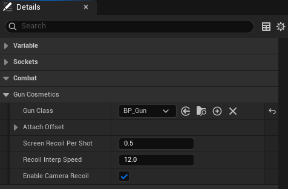
Step 3: Customize Explosive Blasts & Ricochet Bounces
Edit Bullet Attributes, ExplosionImpulseStrength, and MeshSpinRate directly on BP_Bullet_TrashBomb or BP_Bullet_SawBlade Class Defaults.
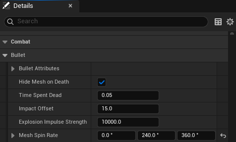
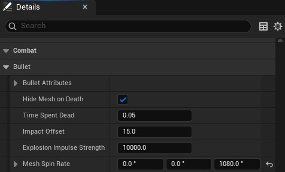
End of Combat System Configuration
Weapons, spawners, cosmetic recoil, and specialized bullet projectiles are wired together through Gameplay Tags without hardcoded weapon switch branching.
Weapon Modes & Blueprint Entry Nodes
Explosive TrashBomb Detonation
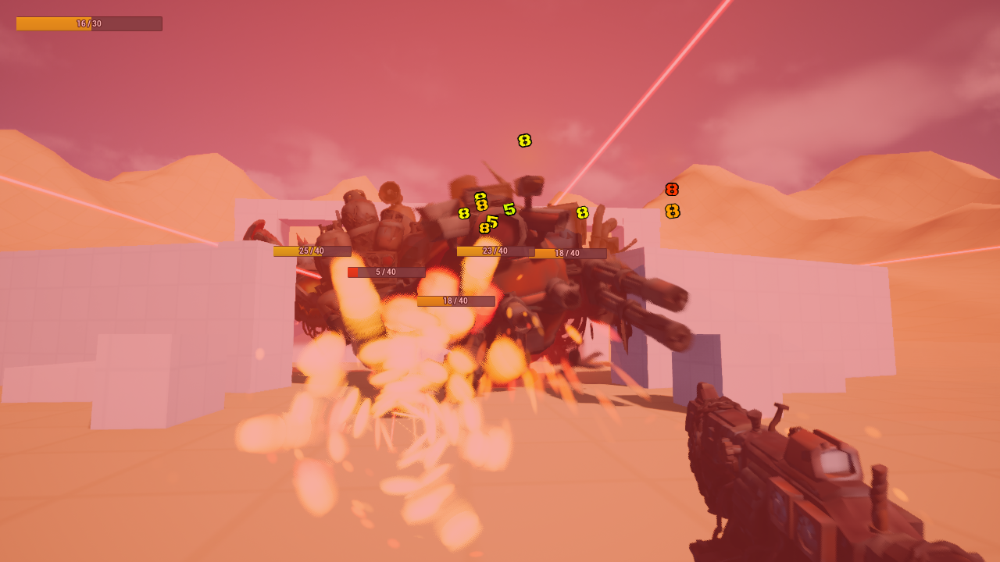
Deals radial AoE damage, pushes physics bodies (ExplosionImpulseStrength), and triggers OnBulletExploded.
Ricochet & Pierce Saw Blade
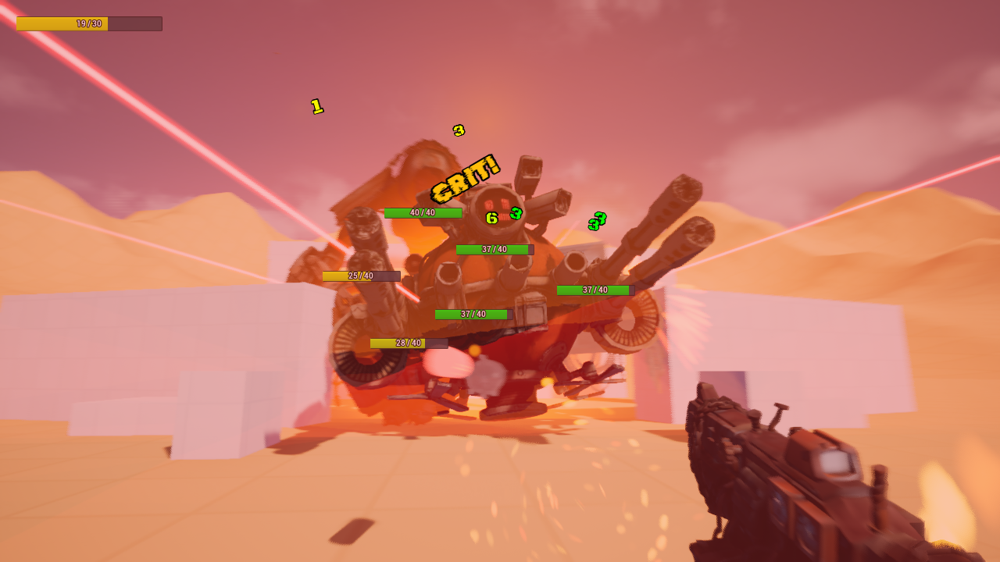
Bounces across walls (NumBounces) and tears through multiple aerial enemies (MaxPierceCount).
Fire Single Shot
Manual shot trigger usable inside Enhanced Input Started/Triggered graphs.
Cycle Gun Preset
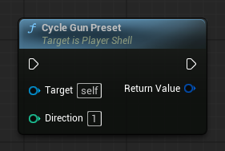
Steps cleanly through PresetCycleOrder Gameplay Tags.
Select Gun State
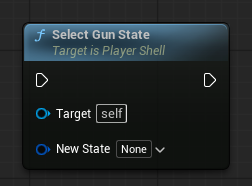
Switches immediately to any configured Combat.Gun.* Gameplay Tag.
Enhanced Input Character Graph
Movement, look, jump, firing, and keys 1 through 4 wired on BP_SimpleFlyingEnemyCombatDemoCharacter.
Appendix - Combat System API Reference
Additional weapon, recoil, and bullet setters are exposed on `UGunComponent`, `UBulletSpawnerComponent`, `UGunCosmeticComponent`, and `ABullet`.
| Name | Type | Inputs / Outputs | Functionality |
|---|---|---|---|
UGunComponent::SelectGunState | Function | In: FGameplayTag NewStateTagReturn: bool | Switches active weapon attributes from GunDataAssets and broadcasts OnWeaponStateChanged |
UGunComponent::CycleGunPreset | Function | In: int32 StepReturn: FGameplayTag | Advances or steps back through PresetCycleOrder and returns the new active tag |
UGunComponent::FireSingleShot | Function | In: none Return: bool | Respects fire rate cooldown and spawns one volley through the bound spawner |
UBulletSpawnerComponent::Shoot | Function | In: FGunAttributesReturn: int32 | Computes spread and split yaw angles and spawns all projectiles for a single shot |
ABullet::TakeDamageDispatch | Function | In: AActor*, FHitResult, bIsExplosionReturn: bool | Dispatches damage to ICombatTarget and broadcasts OnBulletHitTarget |
UGunCosmeticComponent::HandlePlayerShot | Function | In: none Out: Camera/Mesh Recoil | Applies additive camera recoil kick and triggers muzzle/gun recoil animation |
UI, World Health Bars, Damage Popups & Hit Flash
Event-driven UMG feedback built around UDamageHUDWidget, UHealthBarWidget, UDamagePopupComponent, and UHitFlashComponent with zero per-tick polling.
SimpleFlyingEnemyCombatDemo to see live 3D floating numbers, CRIT! callouts, world HP curves, enemy white hit-flashes, and crimson screen flashes.| UI / Feedback Element | Class / Component | How It Updates |
|---|---|---|
| Player Damage Flash & Numbers | UDamageHUDWidget (WBP_DamageHUD) | Listens to damage broadcasts for screen vignette flash (PlayerDamageFlashColor) and projected numbers |
| World Enemy Health Bars | UHealthBarWidget (WBP_HealthBar) | Attached to enemy WorldHealthBarWidget and bound cleanly to UHealthComponent |
| Floating Damage Bridge | UDamagePopupComponent | Converts UHealthComponent::OnTookDamage payloads + hit location into HUD popup calls |
| Mesh Hit-Flash Material | UHitFlashComponent | Writes scalar LastHitTime + HitGlowIntensity onto dynamic material instances when damaged |
Configuration
Step 1: Assign Damage HUD Class & Health Stats on Player
Set DamageHUDWidgetClass (WBP_DamageHUD) in Combat | Player | UI on your player Blueprint and configure armor, dodge, and health on HealthComponent.
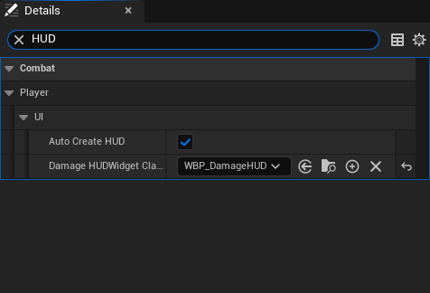
Step 2: Configure Floating World Health Bars & Popups
Toggle Show World Health Bar in Enemy | UI on enemy Blueprints and tune Show Zero Damage Popups, Notify on Dodge, and Fallback World Offset on DamagePopupComponent.
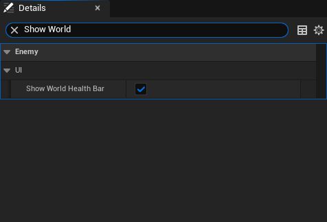
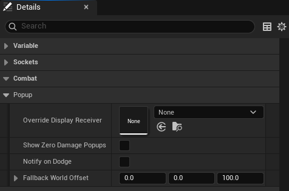
Step 3: Tune Dynamic Emissive Hit-Flash Parameters
Adjust GlowDuration, HitGlowIntensity, HitGlowColor, and optional FlashCurve on HitFlashComponent to match any stylized or PBR enemy material.
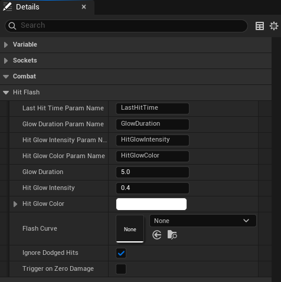
End of UI & Popups Configuration
Every damage event flows automatically from UHealthComponent to floating numbers, world health bars, emissive mesh flashes, and the player HUD flash.
UI Wiring & Event Graphs
Thin Demo HUD Blueprint Graph
BP_SimpleFlyingEnemyCombatDemoHUD creates the widget, calls BindtoPlayerShell, and adds it to viewport cleanly.
On Took Damage Delegate Binding
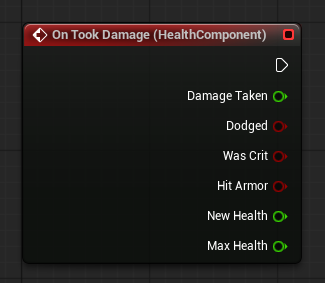
Hook custom camera shakes, sound cues, or low-HP alarms cleanly via OnTookDamage on UHealthComponent.
Appendix - UI & Popups API Reference
All widget colors, curves, and popup scaling parameters are editable in C++, Blueprint UMG designers, and Details panels.
| Name | Type | Inputs / Outputs | Functionality |
|---|---|---|---|
UHealthComponent::OnTookDamage | Delegate | Out: DamageTaken, bDodged, bWasCritOut: bHitArmor, NewHealth, MaxHealth | Primary combat feedback broadcast listened to by UI, popups, and hit-flash components |
UDamageHUDWidget::TriggerPlayerDamageFlash | Function | In: DamageTaken, bWasCrit | Pulses the crimson directional/vignette screen overlay when the player is hit |
UDamageHUDWidget::ComputePopupPlacement | Function | In: PC, WorldLocationOut: OutScreenPos, OutDistanceScale | Projects 3D world hit locations into resolution-independent screen popup coordinates |
UHealthBarWidget::BindToHealthComponent | Function | In: UHealthComponent* | Subscribes bar fill and numeric text automatically to health updates |
UDamagePopupComponent::DispatchPopup | Function | In: FTookDamagePopupReturn: bool | Routes formatted damage, crit, and dodge payloads to HUD/world display receivers |
UHitFlashComponent::TriggerHitFlash | Function | In: none | Resets LastHitTime to current world time on all dynamic material instances |
BP_Persistor - Direct Pursuit Drone
Relentless thruster-driven hunter powered by UFlyingPersistorLogic that zeroes vertical mismatch, locks onto player sightlines, and combines contact melee with enemy projectile bursts.
BP_Persistor into any level or engage it right inside SimpleFlyingEnemyCombatDemo to see floor-safe pursuit steering and 4 active thruster exhausts.| Property / Module | Logic Class / Component | Default Showcase Role |
|---|---|---|
| Logic Implementation | UFlyingPersistorLogic | Pursues directly while clearing CapsuleRoot scaled half-height above floor obstacles |
| Thruster Exhausts | NS_ThrusterFire x 4 Sockets | Attached via ThrusterAttachments offsets with live movement |
| Damage & Feedback | UHealthComponent, UMeleeComponent, UHitFlashComponent | 40 HP showcase baseline, contact melee collision, crit visor hitbox, white hit-flash |
Configuration
Step 1: Place BP_Persistor & Inspect Enemy Hierarchy
Drag BP_Persistor into your level; CapsuleRoot, CritHitbox, AttackPlayerHitbox, BulletSpawnerComponent, and WorldHealthBarWidget come pre-configured.
Step 2: Customize Thruster FX & Sockets in Details
Adjust Thruster Niagara Effect and its 4 Thruster Attachments socket/offset transforms directly under Enemy | FX.
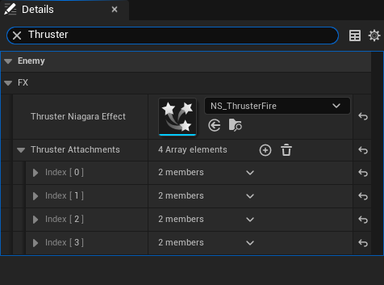
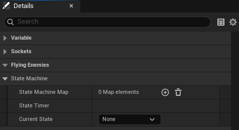
End of Persistor Configuration
BP_Persistor chases continuously, keeps pressure on moving players, and scales damage/speed through its DA_Enemy_Persistor DataAsset.
Persistor Mechanics & State Control
Thruster Attachment Transforms
Four configurable exhaust offsets attach cleanly to BaseEnemyMesh and scale proportionally with EnemyScale.
Enemy State Machine Driven
UFlyingEnemyStateMachine coordinates Idle/Chase/Attack transitions without heavy tick polling.
Appendix - Persistor API Reference
Persistor inherits all common enemy delegates and DataAsset hooks from `AFlyingEnemyPawn` and `UFlyingEnemyBaseLogic`.
| Name | Type | Inputs / Outputs | Functionality |
|---|---|---|---|
UFlyingPersistorLogic | ActorComponent | In: FFlyingMovementConfig | Drives direct target pursuit with ground clearance clamping along Z |
AFlyingEnemyPawn::ApplyEnemyConfigDataAsset | Function | In: UEnemyCombatDataAsset* | Applies stats, thruster attachments, scale, and weapon profile (DA_Enemy_Persistor) |
AFlyingEnemyPawn::OnEnemyDied | Delegate | Out: DeadEnemy, Killer | Broadcasts when health reaches zero so encounters or score systems can react |
UFlyingEnemyStateMachine::EnterState | Function | In: EFlyingEnemyState | Switches state cleanly and emits OnStateEntered / OnNativeStateEntered |
BP_BombBot - Power-Up Self-Destruct Bot
Aggressive hovering demolition unit (UFlyingBombBotLogic) that closes distance and executes a rapid radial spin telegraph before triggering MeleeComponent self-destruction.
BP_BombBot enter AttackPlayerHitbox range to see its acceleration ramp, thruster plume, spin wind-up, and high-knockback player blast.| Property / Module | Component / Logic | Behavior |
|---|---|---|
| Logic Implementation | UFlyingBombBotLogic | Ramps acceleration toward player, locks into self-destruct power-up state on overlap |
| Detonation Melee | UMeleeComponent (bExplodeOwnerOnHit) | Triggers radial explosion damage + player knockback impulse (BombBot blast) |
| Defense & Crit Zone | CritHitbox, UHitFlashComponent | Front core triggers yellow CRIT! numbers and crisp emissive white hit-flash |
Configuration
Step 1: Assign DA_Enemy_BombBot & Scale in Class Defaults
Set Archetype to BombBot (DA_Enemy_BombBot) and verify CapsuleRoot and AttackPlayerHitbox bounds match your arena corridors.
Step 2: Configure Self-Destruct Damage & Knockback
Select MeleeComponent and tune DamageMultiplier and Explode Owner on Hit under Combat | Melee.
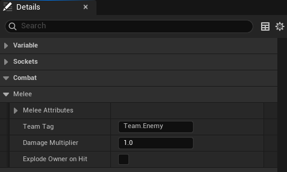
End of Bomb Bot Configuration
BP_BombBot pressures players out of cover by forcing immediate target prioritization before its power-up blast triggers.
Bomb Bot Explosion & State Modules
Self-Destruct Melee Toggle
UMeleeComponent handles both cooldown melee impacts and single-shot owner detonation via bExplodeOwnerOnHit.
Power-Up Spin Telegraph
UFlyingBombBotLogic spins the mesh cleanly along yaw during power-up to warn the player before detonation.
Appendix - Bomb Bot API Reference
Bomb Bot exposes all state timing and blast multipliers across `DA_Enemy_BombBot` and `UMeleeComponent`.
| Name | Type | Inputs / Outputs | Functionality |
|---|---|---|---|
UFlyingBombBotLogic | ActorComponent | In: Target actor, StateMachine | Manages aerial pursuit, Attacking power-up spin, and detonation timing |
UMeleeComponent (bExplodeOwnerOnHit) | ActorComponent | In: FMeleeAttributesOut: Overlap damage / Self-destruct | Applies knockback and damage when AttackPlayerHitbox overlaps targets |
UFlyingEnemyBaseLogic::InitializeEnemyLogic | Function | In: AFlyingEnemyPawn* | Wires logic component to pawn movement, state machine, and data asset config |
BP_MachineGunner - Dual-Barrel Hovering Gunner
Heavy orbital gunship (UFlyingMachineGunnerLogic) blending repulsion from nearby drones, player sightline orbiting (WeightedOffset), and alternating dual BulletSpawnerComponent barrels.
BP_MachineGunner strafe across cover blocks in SimpleFlyingEnemyCombatDemo while alternating left and right rotary barrels at the player.| Property / Module | Component / Logic | Behavior |
|---|---|---|
| Logic Implementation | UFlyingMachineGunnerLogic (UFlyingAirBaseLogic) | Combines drone-to-drone separation, obstacle avoidance, and orbit weights |
| Dual Gun Spawners | BulletSpawnerComponent + SecondaryBulletSpawnerComponent | Alternates muzzles every shot when Alternate Dual Spawners is enabled |
| Profile Asset | DA_Enemy_MachineGunner | Sets enemy scale (10.0), sustained bullet speed, and dual-orbiter preset |
Configuration
Step 1: Enable Alternate Dual Spawners in Class Defaults
Ensure Archetype is set to Machine Gunner (Dual Orbiter) and enable Alternate Dual Spawners under Enemy | Weapon.
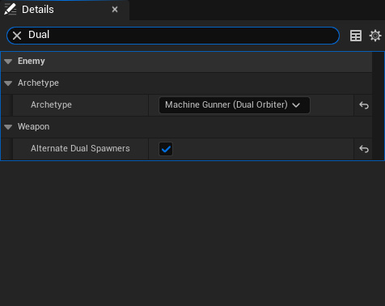
Step 2: Tune Health Bar UI & State Machine Transitions
Adjust Show World Health Bar in Enemy | UI or override transition timings inside StateMachine.
End of Machine Gunner Configuration
BP_MachineGunner delivers suppressive dual-barrel fire while keeping clean spatial separation from other aerial allies.
Machine Gunner Orbiting & Dual Barrels
Dual Spawner Alternation
Cycles shots cleanly between primary and secondary spawner transforms without duplicating weapon code.
Air Base Steering Weights
Inherits UFlyingAirBaseLogic repulsion and obstacle avoidance rays (AirObstacleAvoidance).
Appendix - Machine Gunner API Reference
Both player and MachineGunner reuse `UBulletSpawnerComponent`, making projectile swaps effortless.
| Name | Type | Inputs / Outputs | Functionality |
|---|---|---|---|
UFlyingMachineGunnerLogic | ActorComponent | In: Orbit & repulsion weights | Coordinates heavy air-base hovering and alternating dual-barrel firing |
UFlyingAirBaseLogic | ActorComponent | In: Separation, Sightline weights | Provides shared obstacle avoidance and group separation steering |
UFlyingEnemyFunctionLibrary::AirObstacleAvoidance | Blueprint Function | In: Context, Origin, TraceParams Return: FVector | Computes open steering vector clear of cover blocks and walls |
BP_NailGunner - Lead-Aiming Burst Shooter
Agility-focused CRT drone (UFlyingNailGunnerLogic) cycling Idle, Wandering, and Attacking states while computing predictive lead rotations from projectile speed.
BP_NailGunner while strafing in SimpleFlyingEnemyCombatDemo to see predictive lead-aiming spark bursts track your lateral velocity.| Property / Module | Component / Logic | Behavior |
|---|---|---|
| Logic Implementation | UFlyingNailGunnerLogic (UFlyingAirBaseLogic) | 3-state state-machine cadence pausing drift during precision bursts |
| Predictive Targeting | CalculateLeadRotationByProjectileSpeed | Leads moving targets based on bullet velocity before firing each round |
| Weapon Tuning | EnemyGunAttributes / BulletSpawnerComponent | Rapid burst fire rate and spread configurable right on Class Defaults |
Configuration
Step 1: Set Archetype & Tune Enemy Gun Attributes
Assign DA_Enemy_NailGunner and tune Fire Rate, Spread, and Bullet Attributes under Spawner / Enemy | Weapon.
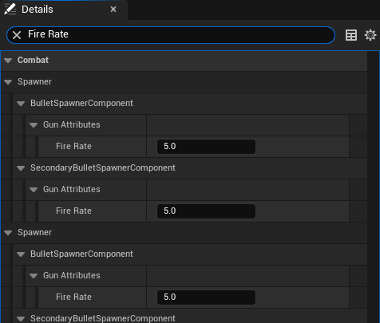
Step 2: Customize State Machine Idle / Burst Durations
Select StateMachine on BP_NailGunner to inspect state transitions and adjust per-state burst dwell times.
End of Nail Gunner Configuration
BP_NailGunner forces constant player movement by predicting strafe velocity cleanly inside its attack state.
Nail Gunner Predictive Targeting & States
Lead Rotation Helper
CalculateLeadRotationByProjectileSpeed aims ahead of moving targets cleanly without tick blueprints.
Hit Flash & Crit Box Ready
Supports directional crit hits and full emissive flash feedback during burst pauses.
Appendix - Nail Gunner API Reference
Nail Gunner reuses `UFlyingEnemyFunctionLibrary` math helpers that you can also call from custom Blueprint turrets.
| Name | Type | Inputs / Outputs | Functionality |
|---|---|---|---|
UFlyingNailGunnerLogic | ActorComponent | In: Burst state durations | Manages Wandering/Idle/Attacking cadence and predictive lead bursts |
UFlyingEnemyFunctionLibrary::CalculateLeadRotationByProjectileSpeed | Blueprint Pure | In: ShooterLoc, TargetActor, Speed Return: FRotator | Computes intercept aim direction based on target velocity and projectile speed |
UFlyingEnemyFunctionLibrary::CalculateLeadRotationByTime | Blueprint Pure | In: ShooterLoc, TargetActor, LeadTime Return: FRotator | Projects fixed lead-time aim vector ahead of target trajectory |
BP_Stalker - Constricting Orbit & Dash Assassin
Large predatory winged bot (UFlyingStalkerLogic, scale 25.0) that tightens an inward spiral (CalculateConstrictingOrbit) before launching blinding claw dive-dashes.
BP_Stalker across the open desert sky in SimpleFlyingEnemyCombatDemo as it tightens its orbit radius and dives into melee range.| Property / Module | Component / Logic | Behavior |
|---|---|---|
| Logic Implementation | UFlyingStalkerLogic | Executes CalculateConstrictingOrbit spiral approach transitioning to Attacking dash |
| Physical Footprint | EnemyScale = 25.0 | Clamps minimum hover altitude safely using scaled CapsuleRoot half-height |
| Close-Range Pressure | UMeleeComponent + AttackPlayerHitbox | Delivers heavy claw strike damage and knockback on dash contact |
Configuration
Step 1: Set Archetype to Stalker (Dash Orbiter)
Verify BP_Stalker references DA_Enemy_Stalker and Enemy Scale = 25.0 under Enemy | Archetype.
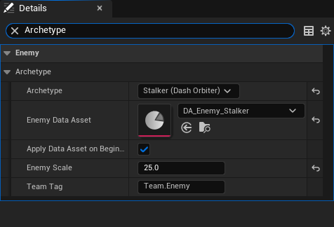
Step 2: Tune Orbit & Dash State Machine Timings
Inspect StateMachine and MeleeComponent on BP_Stalker to control spiral duration and claw strike multiplier.
End of Stalker Configuration
BP_Stalker adds towering vertical threat silhouettes and forces spatial awareness above the player's horizontal sightline.
Stalker Constricting Spiral & Dive
Constricting Orbit Navigation
CalculateConstrictingOrbit traces clear air lanes while steadily collapsing orbital radius onto the player.
Safe Tall-Capsule Ground Clearance
Maintains scaled vertical clearance above ArenaFloor so tall claws sweep cleanly at chest height.
Appendix - Stalker API Reference
Stalker movement speed and orbit contraction can be tuned directly in C++ or `DA_Enemy_Stalker`.
| Name | Type | Inputs / Outputs | Functionality |
|---|---|---|---|
UFlyingStalkerLogic | ActorComponent | In: Target actor, State durations | Orchestrates spiraling orbit chase and high-speed dive dashes |
UFlyingEnemyFunctionLibrary::CalculateConstrictingOrbit | Blueprint Callable | In: Center, Origin, Radius, Offset Return: FVector | Computes inward-spiraling orbit waypoints clear of nearby static geometry |
UMeleeComponent | ActorComponent | In: FMeleeAttributes | Applies claw strike damage on AttackPlayerHitbox contact |
BP_LaserBallBot - Quad Niagara Beam Sweeper
Heavy rotating orb (UFlyingLaserBallBotLogic) tracking player altitude while sweeping 4 live NS_LaserBeam traces that spawn NS_LaserHit sparks and apply cooldown beam damage.
BP_LaserBallBot in SimpleFlyingEnemyCombatDemo to see 4 rotating red-core Niagara laser beams carving across walls and damaging the player.| Property / Module | Component / Logic | Behavior |
|---|---|---|
| Logic Implementation | UFlyingLaserBallBotLogic | Rotates BaseEnemyMesh and calls TraceSingleBeam per beam every attack tick |
| Laser Tracing & Damage | BeamDamage, BeamDamageCooldown, LaserBeamLocalOrigin | Damages ICombatTarget actors along the trace on per-target cooldown intervals |
| Niagara Systems | NS_LaserBeam, NS_LaserHit | Quad continuous beams anchored at origin sockets with wall/target impact flares |
Configuration
Step 1: Configure Beam Damage, Cooldown & Origin in Details
Expand Enemy | Laser on BP_LaserBallBot to tune Beam Damage, Beam Damage Cooldown, Laser Beam Local Origin, and Niagara effects.
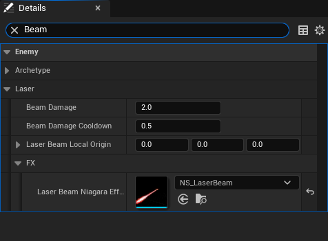
Step 2: Inspect Quad Niagara Beam Endpoints & State Transitions
Use StateMachine (Wandering to Attacking spin cycles) and customize hit-flash parameters for glowing armor plates.
End of Laser Ball Bot Configuration
BP_LaserBallBot anchors multi-enemy arenas with rhythmic hazard beams that reward dodging, jumping, and focus fire.
Laser Ball Bot Tracing & FX
Quad-Beam Niagara Setup
BeamDamage, BeamDamageCooldown, and LaserBeamNiagaraEffect exposed right inside Enemy | Laser.
Beam Update Delegate
Listen to OnBeamUpdated in Blueprint to attach scorch decals, audio loops, or camera rumble at beam hit points.
Appendix - Laser Ball Bot API Reference
Laser origin, endpoints, damage interval, and Niagara assets are all overridable per Blueprint instance.
| Name | Type | Inputs / Outputs | Functionality |
|---|---|---|---|
UFlyingLaserBallBotLogic::InitLaserBeams | Function | In: Beam-to-Endpoint Map | Registers the 4 emitter-to-endpoint scene component pairs |
UFlyingLaserBallBotLogic::UpdateBeams | Function | In: none Out: OnBeamUpdated | Runs TraceSingleBeam for every beam, places NS_LaserHit, and applies beam cooldown damage |
UFlyingLaserBallBotLogic::TraceSingleBeam | Function | In: LookVector, Start Out: EndLocation, BeamLength | Performs multi-channel line trace and scales beam length parameters cleanly |
UFlyingLaserBallBotLogic::OnBeamUpdated | Delegate | Out: Component, Start, End, Length | Fires per beam frame update for optional custom VFX or audio cues |
Read the screenshot-free Detailed Documentation (also bundled offline in DetailedDocs.html next to this User Guide).